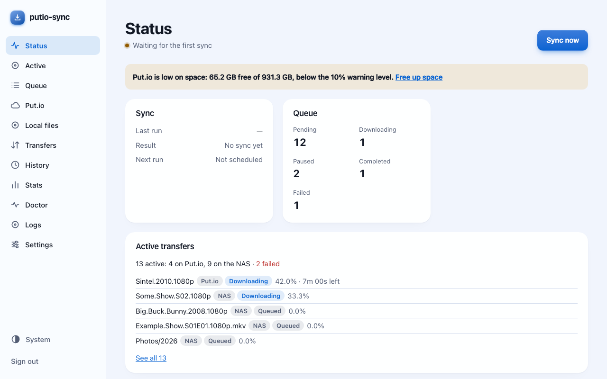
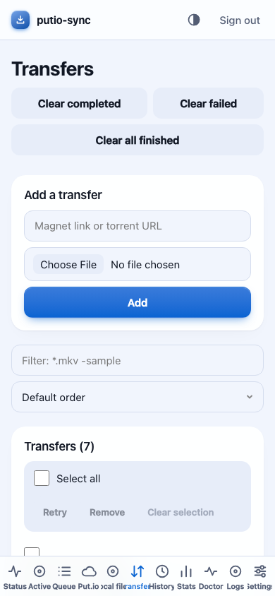

Docker Compose
Runs anywhere Docker does. Edit the download path in the file first.
curl -LO https://raw.githubusercontent.com/devclinton/putio-sync/v{{version}}/packaging/docker-compose/compose.yaml
docker compose up -dputio-sync watches your Put.io account and copies finished transfers to local storage: parallel, resumable, checksum-verified. It sends torrents and magnet links the other way, and works as a download client for Radarr and Sonarr.
One small Rust binary with a web UI, built to run unattended. On a NAS it idles at about 33 MB of memory.
.torrent and .magnet files into a folder and they go to Put.io.

The latest release is {{version}}.
Release notes and all downloads.
After installing, open http://<host>:15432/ and enter the setup code from the log.
Runs anywhere Docker does. Edit the download path in the file first.
curl -LO https://raw.githubusercontent.com/devclinton/putio-sync/v{{version}}/packaging/docker-compose/compose.yaml
docker compose up -dUntil it is listed in Community Applications, save the template on the server, then pick putio-sync under Docker › Add Container.
curl -o /boot/config/plugins/dockerMan/templates-user/my-putio-sync.xml \
https://raw.githubusercontent.com/devclinton/putio-sync/v{{version}}/packaging/unraid/putio-sync.xmlAdd a custom app and paste the same compose.yaml. Umbrel and CasaOS packages are in packaging/.
Any distribution with snapd. Updates itself.
sudo snap install putio-syncUse arm64 in place of amd64 on ARM.
curl -LO https://github.com/devclinton/putio-sync/releases/download/v{{version}}/putio-sync_{{version}}_amd64.deb
sudo apt install ./putio-sync_{{version}}_amd64.debA single static binary for any distribution, NAS firmware included. Use aarch64 on ARM.
curl -LO https://github.com/devclinton/putio-sync/releases/download/v{{version}}/putio-sync-{{version}}-linux-x86_64.tar.gz
tar -xzf putio-sync-{{version}}-linux-x86_64.tar.gz
sudo install putio-sync-{{version}}-linux-x86_64/putio-sync /usr/local/bin/With Homebrew, or the installer package for Apple silicon, which also starts the daemon at login.
brew install devclinton/putio-sync/putio-syncDownload and run the installer for x64 or ARM64. It isn't code-signed, so SmartScreen may ask first: choose More info › Run anyway.